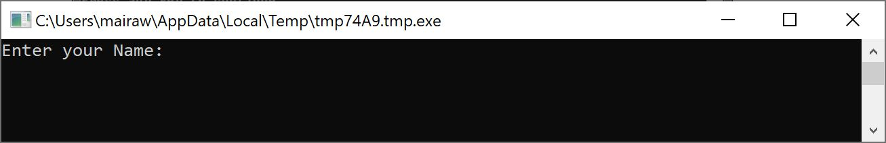
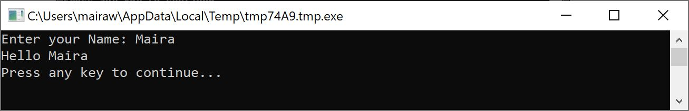
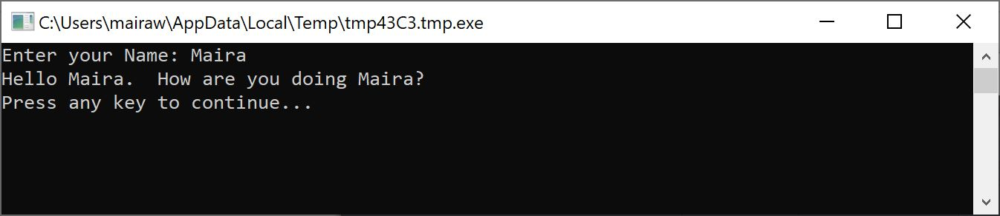
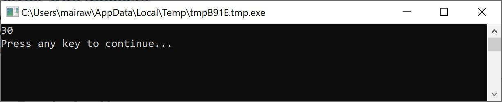
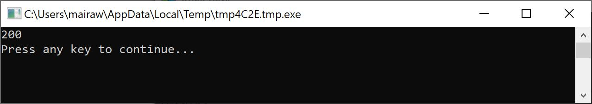
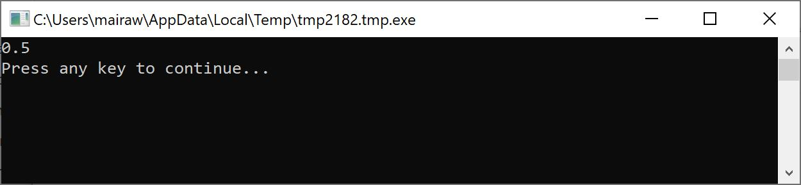
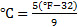
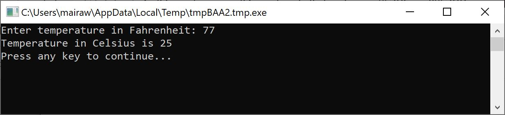

Wouldn’t it be nice if our program can actually say “Hello” with the users name instead of saying the generic “Hello World?” In order to do that we must first ask the user for his/her name and then store it somewhere and then print out “Hello” with the user’s name. Let’s see how we can do that:
TextWindow.Write("Enter your Name: ")
name = TextWindow.Read()
TextWindow.WriteLine("Hello " + name)
When you type and execute this program, you’ll see an output like the following:

Figure 3.1 - Ask the user's name
And when you type in your name and hit ENTER, you’ll see the following output:

Figure 3.2 - A Warm Hello
Now, if you run the program again, you’ll be asked the same question again. You can type in a different name and the computer will say Hello with that name.
In the program you just ran, the line that might have caught your attention is this:
name = TextWindow.Read()Read() looks just like WriteLine(), but with no inputs. It is an operation and basically it tells the computer to wait for the user to type in something and hit the ENTER key. Once the user hits the ENTER key, it takes what the user has typed and returns it to the program. The interesting point is that whatever the user had typed is now stored in a variable called name. A variable is defined as a place where you can store values temporarily and use them later. In the line above, name was used to store the name of the user.
The next line is also interesting:
TextWindow.WriteLine("Hello " + name)This is the place where we use the value stored in our variable, name. We take the value in name and append it to “Hello” and write it to the TextWindow.
Once a variable is set, you can reuse it any number of times. For example, you can do the following:
Note: Write, just like WriteLine is another operation on ConsoleWindow. Write allows you to write something to the ConsoleWindow but allows succeeding text to be on the same line as the current text.
TextWindow.Write("Enter your Name: ")
name = TextWindow.Read()
TextWindow.Write("Hello " + name + ". ")
TextWindow.WriteLine("How are you doing " + name + "?")
And you’ll see the following output:

Figure 3.3 - Reusing a Variable
Variables have names associated with them and that’s how you identify them. There are certain simple rules and some really good guidelines for naming these variables. They are:
We’ve just seen how you can use variables to store the name of the user. In the next few programs, we’ll see how we can store and manipulate numbers in variables. Let’s start with\ a really simple program:
number1 = 10
number2 = 20
number3 = number1 + number2
TextWindow.WriteLine(number3)
When you run this program you’ll get the following as output:

Figure 3.4 - Adding Two Numbers
In the first line of the program, you’re assigning the variable number1 with a value of 10. And in the second line, you’re assigning the variable number2 with a value of 20. In the third line, you’re adding number1 and number2 and then
Note: Notice that the numbers don’t have quotes around them. For numbers, quotes are not necessary. You need quotes only when you’re using text.
assigning the result of that to number3. So, in this case, number3 will have a value of 30. And that is what we printed out to the TextWindow.
Now, let’s modify that program slightly and see the results:
number1 = 10
number2 = 20
number3 = number1 * number2
TextWindow.WriteLine(number3)
The program above will multiply number1 with number2 and store the result in number3. And you can see in the result of that program below:

Figure 3.5 - Multiplying Two Numbers
Similarly, you can subtract or divide numbers. Here is the subtraction:
number3 = number1 - number2And the symbol for division is ‘/’. The progam will look like:
number3 = number1 / number2And the result of this division would be:

Figure 3.6 - Dividing Two Numbers
For the next program we’ll use the formula  to convert Fahrenheit temperatures to Celsius temperatures.
First, we’ll get the temperature in Fahrenheit from the user and store it in a variable. There’s a special operation that lets us read numbers from the user and that is TextWindow.ReadNumber.
TextWindow.Write("Enter temperature in Fahrenheit: ")
fahr = TextWindow.ReadNumber()
Once we have the Fahrenheit temperature stored in a variable, we can convert it to Celsius like this:
celsius = 5 * (fahr - 32) / 9The parentheses tell the computer to calculate the fahr – 32 part first and then process the rest. Now all we have to do is print the result out to the user. Putting it all together, we get this program:
TextWindow.Write("Enter temperature in Fahrenheit: ")
fahr = TextWindow.ReadNumber()
celsius = 5 * (fahr - 32) / 9
TextWindow.WriteLine("Temperature in Celsius is " + celsius)
And the result of this program would be:

Figure 3.7 - Temperature Conversion